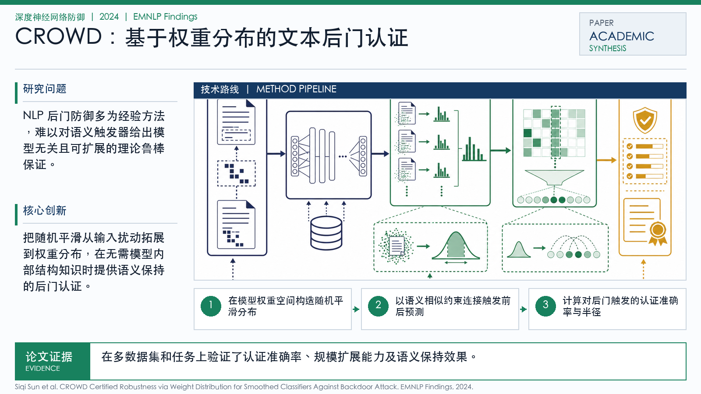

Problem
解决的问题
NLP 后门防御多为经验方法，难以对语义触发器给出模型无关且可扩展的理论鲁棒保证。
Defense on DNNs · 2024 · EMNLP Findings
CROWD Certified Robustness via Weight Distribution for Smoothed Classifiers Against Backdoor Attack
Problem
NLP 后门防御多为经验方法，难以对语义触发器给出模型无关且可扩展的理论鲁棒保证。
Value
在多数据集和任务上验证了认证准确率、规模扩展能力及语义保持效果。
Paper-grounded Academic Summary
该代表页依据原文摘要、贡献段与方法图注生成。方法视觉由 ImageGen 按论文证据逐篇绘制，中文研究问题、技术路线、创新点与实验结论采用确定性排版，以保证内容与字符准确。
打开原文 PDF
Technical Route
Innovation